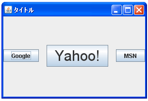

- Home ›
- Swing ›
- BoxLayoutクラス
Boxクラスを使った可変長領域の挿入
コンポーネントとコンポーネントの間に可変長の隙間を空けたい場合には可変長サイズの透明なオブジェクトをコンポーネントとコンポーネントの間に挟む事で実現できます。この透明で可変長サイズのオブジェクトを作成してくれるのがBoxクラスで用意されている「createGlue」メソッドです。
createGlue public static Component createGlue()
不可視の「接着剤」コンポーネントを作成します。これは、可視コンポーネン トに水平ボックスに対する最大幅や垂直ボックスに対する最大高が指定されて いる Box に便利です。接着剤コンポーネントは、隣り合うコンポーネントの 間隔を埋めるために必要なだけ延びる、糊のようなものと考えることができま す。 たとえば、1 つの水平ボックスに、固定サイズのコンポーネントが 2 つ含まれ ているとします。このボックスに空間が追加されても、固定サイズコンポーネ ントは大きくなりません。このとき、接着剤がない場合、2 番目のコンポーネ ントの右の空間が余ります。ここで接着剤を固定サイズコンポーネントの間に 置くと、余った空間を接着剤コンポーネントが占めます。接着剤を 1 番目の 固定サイズコンポーネントの前に置くと、余った空間を接着剤コンポーネント が占め、2 つの固定サイズコンポーネントはボックスの右に寄せられます。1 番目の固定サイズコンポーネントの前、および 2 番目の固定サイズコンポー ネントのあとに接着剤を置くと、2 つの固定サイズコンポーネントはボックス の中央に寄せられます。 接着剤を使うには、Box.createGlue を呼び出して、返されたコンポーネントを コンテナに追加します。接着剤コンポーネントには、最小のサイズ、あるいは 適切なサイズがありません。 そのため、余分な空間がない限り、空間を占める ことはありません。余分な空間があれば、接着剤コンポーネントは、水平方向、 または垂直方向の利用可能な空間を占めます。 これは、幅あるいは高さの最大 値の指定がないコンポーネントと同様です。 戻り値: コンポーネント
このメソッドを使って作成したコンポーネントを挿入すると、水平方向及び垂直方向に拡張できるサイズまで自動的に大きくなります。その為、例えば水平方向にコンポーネントを配置するレイアウトを選択している場合にこのメソッドで作成したコンポーネントを挿入すると、その後に挿入されたコンポーネントは右端に接する場所まで移動することになります。(具体的なイメージは後のサンプルを見てください)。
実際の使い方は次のようになります。
JPanel p = new JPanel();
p.setLayout(new BoxLayout(p, BoxLayout.PAGE_AXIS));
JButton button1 = new JButton("button1");
JButton button2 = new JButton("button2");
p.add(button1);
p.add(Box.createGlue());
p.add(button2);
また「createGlue」メソッドは水平方向及び垂直方向の両方に可変長可能なコンポーネントを作成しますが水平方向及び垂直方向のどちらかの方向だけに可変するコンポーネントを作成するメソッドもそれぞれ用意されています。水平方向に可変するコンポーネントを作成するには「createHorizontalGlue」メソッドを使います。
createHorizontalGlue public static Component createHorizontalGlue()
水平方向の接着剤コンポーネントを作成します。 戻り値: コンポーネント
垂直方向に可変するコンポーネントを作成するには「createVerticalGlue」メソッドを使います。
createVerticalGlue public static Component createVerticalGlue()
垂直方向の接着剤コンポーネントを作成します。 戻り値: コンポーネント
サンプルプログラム
では簡単なサンプルを作成して試してみます。
import javax.swing.*;
import java.awt.Dimension;
import java.awt.Font;
import java.awt.BorderLayout;
public class BoxLayoutTest8 extends JFrame{
public static void main(String[] args){
BoxLayoutTest8 frame = new BoxLayoutTest8();
frame.setDefaultCloseOperation(JFrame.EXIT_ON_CLOSE);
frame.setBounds(10, 10, 300, 200);
frame.setTitle("タイトル");
frame.setVisible(true);
}
BoxLayoutTest8(){
JButton button1 = new JButton("Google");
JButton button2 = new JButton("Yahoo!");
button2.setFont(new Font("Arial", Font.PLAIN, 30));
JButton button3 = new JButton("MSN");
JPanel p = new JPanel();
p.setLayout(new BoxLayout(p, BoxLayout.LINE_AXIS));
p.add(button1);
p.add(button2);
p.add(Box.createGlue());
p.add(button3);
getContentPane().add(p, BorderLayout.CENTER);
}
}
上記をコンパイルした後で実行すると次のように表示されます。

今回は2番目と3番目のコンポーネントの間に可変長の透明な領域を挿入しています。この領域によって3番目のコンポーネントはフレームの最大幅まで右側に押し出されるため結果的に右端に接する位置まで移動します。フレームのサイズを変更したとしても自動的に調整が行われます。
他のサンプルプログラム
2つの可変長領域を挿入した場合でも試してみます。(ソースコードの表示は省略します)。
上記をコンパイルした後で実行すると次のように表示されます。

今回は1番目と2番目の間、そして2番目と3番目のコンポーネントの間に可変長の透明な領域を挿入しています。2つの可変長領域を挿入した場合、どちらの領域も同じ大きさになるように調整されます。フレームの大きさを変えた場合も自動的に調整されます。
( Written by Tatsuo Ikura )

著者 / TATSUO IKURA
初心者～中級者の方を対象としたプログラミング方法や開発環境の構築の解説を行うサイトの運営を行っています。